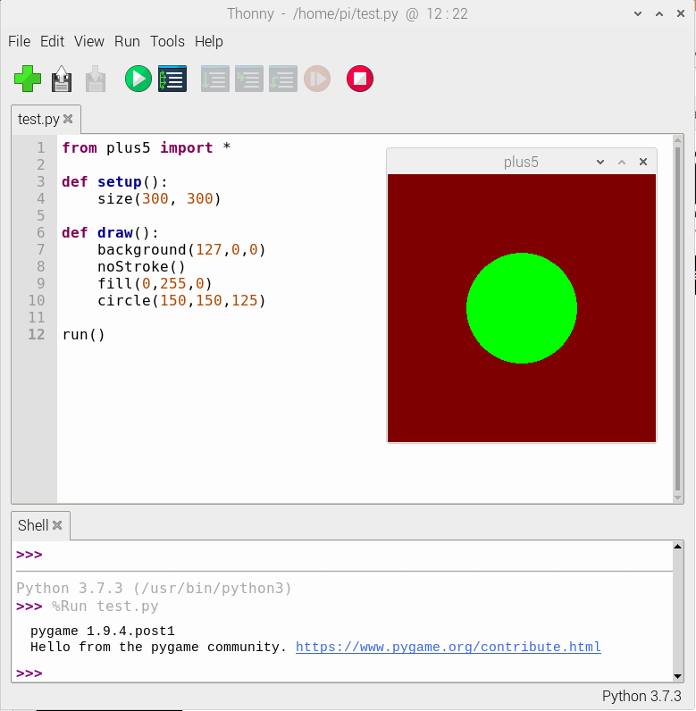
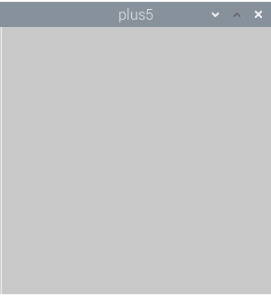
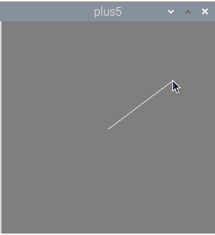
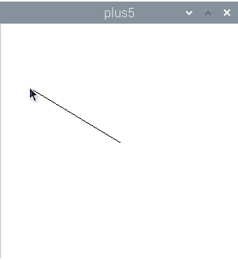
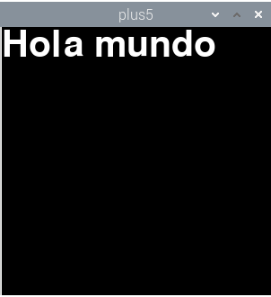
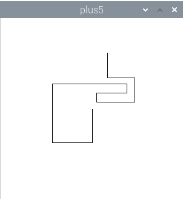

Introducción a Plus5: Programación gráfica fácil con Python
Qué es Plus5
Processing es un entorno de programación gráfico, ideado por Casey Reas y Ben Fry. Es, principalmente, una herramienta educativa. El objetivo es que personas sin conocimientos avanzados de informática, especialmente artistas gráficos, se introdujeran en el mundo de la programación, de una forma sencilla. En su encarnación tradicional, Processing es un entorno integrado de desarrollo basado en Java, con librerías de fácil uso. Processing ofrece funciones para dibujar y animar figuras geométricas, mostrar textos, imágenes, reproducir sonidos y vídeos e interactuar con algunos periféricos como teclado, ratón y cámaras de vídeo.
Estas librerías han sido adaptadas a otros lenguajes de programación, como JavaScript y Python. Precisamente, Plus5 es una implementación de Processing en Python nativo. Usa PyGame que a su vez usa las librerías SDL2, disponibles es múltiples sistemas operativos.
¿Cuáles son las ventajas de Plus5? La primera es Python, que es un lenguaje de fácil aprendizaje. La segunda ventaja, es que Plus5 es una librería nativa de Python, y por tanto, puede usarse con el resto de librerías de Python, como NumPy, Pandas, TensorFlow y mil más. Esto abre infinitas posibilidades creativas.
Entorno de programación
Al ser Python estándar, Plus5 se puede programar usando cualquier entorno de programación que tenga soporte de Python, como IDLE, Visual Studio Code, PyCharm, etc. Actualmente, en Raspberry Pi OS viene el entorno Thonny Python IDE, que es el que usaremos en este tutorial.
Al final del artículo indicamos los pasos a seguir para instalar Plus5. Vamos a ver ahora cómo se programa.

Hola mundo, vesión Plus5
Este es el programa más básico que podemos hacer usando Plus5. Tan básico que lo único que hace es abrir una ventana. Los comentarios se indican con una almohadilla.
1 2 3 4 5 6 7 8 9 | |

Lo que hace run() es llamar una sola vez a la función setup(). Luego, entra en un bucle infinito en el que se llamada a la función draw() 60 veces cada segundo.
Generalmente, querremos hacer más cosas. Vamos a hacer un ejemplo más interesante. El siguiente programa crea una ventana de 500 píxeles de largo 500 píxeles de ancho y selecciona el color blanco para los trazos. Luego entra en un bucle infinito que pinta el fondo de la ventana de gris y dibuja una línea desde el centro de la ventana hasta la posición actual del cursor del ratón.
1 2 3 4 5 6 7 8 9 10 11 | |

Ahora usamos varias funciones de dibujo:
stroke(color). Establecer el color de los trazos.background(color). Rellenar el fondo de la ventana.line(x_inicial, y_inicial, x_final, y_final). Dibujamos una línea.
También usamos un par de variables globales:
mouse_x,mouse_y. Son variables proporcionadas por Plus5 que nos devuelven la posición actual del puntero del ratón sobre la ventana.
Por supuesto, Plus5 ofrece muchas más funciones y variables para dibujar otras figuras, trabajar con colores o leer otros periféricos. Pero por muy complicados que los hagamos, todos los programas de Plus5 tienen exactamente la misma estructura: import, setup(), draw() y run(). ¡Es muy fácil!
Coordenadas
Para dibujar en Processing se hará un uso frecuente de las coordenadas de la ventana. Su tamaño se define en la función setup() mediante size(ancho,largo). Para dibujar, debemos tener en cuenta que el punto x = 0, y = 0 está situado en la esquina superior derecha.
| x,y | x,y | x,y |
|---|---|---|
| (0,0) | (1,0) | (2,0) |
| (0,1) | (1,1) | (2,1) |
| (0,2) | (1,2) | (2,2) |
En Plus5, podemos conocer el ancho y largo de la ventana actual, definidos en size(), mediante dos variables globales.
height. Ancho de la ventana.width. Largo de la ventana.
Así, para dibujar una línea desde el centro de la ventana a allá donde esté el cursor del ratón haríamos:
1 2 3 4 5 6 7 8 9 10 11 12 13 14 15 16 | |

El programa es bastante similar al anterior, pero en este caso, las coordenadas del centro de la ventana se calculan automáticamente.
Colores
A la hora de dibujar, muchas veces deberemos especificar un color. Aunque no sea explícito, las figuras necesitan al menos el color del trazo, pero muchas veces también el relleno. Y hay varias formas de especificar los colores.
- Escala de gris, de 0 a 255. Representa un color en la escala de grises, desde el negro (0) al blanco (255).
- Rojo, verde, azul. En este caso, indicamos tres valores, también desde el 0 al 255, pero indicando el tono de rojo, verde y azul.
- Rojo, verde, azul, transparencia. Opcionalmente, podemos indicar un cuarto valor, el de la transparencia, también desde 0 (completamente transparente) a 255 (opaco). Esto nos permite combinar figuras y mezclar colores.
Veamos algunos ejemplos de uso:
1 2 | |
Antes dibujamos una línea, ¿dónde especifiacamos el color de su trazo? Hay dos funciones que debemos llamar antes para indicar los colores tanto el trazo como del relleno de las figuras.
stroke(color). Define el color del trazo.noStroke(). Dibuja la figura sin trazos.fill(color). Relleno de la figura. Se aplica en cuadrados, rectángulos o elipses.noFill(). Dibuja la figura sin color de relleno.
Por ejemplo, para dibujar un rectángulo con trazo blanco y relleno verde:
1 2 3 | |
Estas funciones se pueden encadenar para dibujar varias figuras con diferentes colores.
1 2 3 | |
Figuras básicas
Bueno, aunque ya hemos visto cómo usar dos figuras en Plus5, vamos a poner aquí otras más:
-
point(x,y). Dibuja un punto con el trazo especificado porstroke(). -
line(x_inicial, y_inicial, x_final, y_final). Dibuja una línea desde las coordenadas iniciales a las coordenadas finales. Usa el color de trazo especificado porstroke(). -
triangle(x_1, y_1, x_2, y_2, x_3, y_3). Dibuja un triángulo definido por tres coordenadas. Color de trazo especificado porstroke()y relleno porfill(). -
square(x, y, lado). Dibuja un cuadrado de tamañoladoen las coordenadas indicadas. Color de trazo especificado porstroke()y relleno porfill(). -
rect(x, y, largo, ancho). Dibuja un rectángulo desde las coordenadas iniciales a las coordenadas. Color de trazo especificado porstroke()y relleno porfill(). -
circle(x, y, radio). Dibuja un círculo con centro en las coordenadas x,y y con el radio especificado. Color de trazo especificado porstroke()y relleno porfill(). -
ellipse(x, y, largo, ancho). Dibuja una elipse con centro en las coordenadas x,y y con el ancho y largo especificados. Color de trazo especificado porstroke()y relleno porfill().
Todos los parámetros indicados (coordenadas, radios, tamaños) son numéricos, generalmente números naturales.
Textos
Processing, y Plus5, también permiten escribir textos. Para ello se usa la función text().
text(texto, x, y). Escribe el texto en las coordenadas x,y con el color de trazo especificado porstroke().
Para establecer la fuente y cambiar el tamaño.
-
textSize(tamaño). Cambiar el tamaño del texto, medido en píxeles. -
textFont(fuente). Establece la fuente por defecto. El parámetrofuentees el nombre de una tipografía disponible en el sistema.
Ahora veamos un ejemplo de uso de textos:
1 2 3 4 5 6 7 8 9 10 11 12 13 14 | |

Interacción
Para reaccionar a acciones realizadas por los usuarios, los programas con interfaz gráfico deben leer los estados y eventos del teclado y ratón. Plus5 no es menos, y lo hace bastante sencillo.
Ratón
Como hemos visto, podemos conocer las coordenadas del ratón, pero no son las únicas variables disponibles. También es posible detectar si se han pulsado los botones:
mouse_x. Coordenada x del ratón.mouse_y. Coordenada y del ratón.mouse_is_pressed. Verdadero si se ha pulsado un botón del ratón.mouse_button. Simouse_is_pressedes verdadero,mouse_buttontendrá el valorLEFToRIGHTsegún el botón del ratón que se ha presionado (izquierdo, derecho).
Vamos a ver cómo cambiar el fondo de la pantalla según esté pulsado o no el botón del ratón.
1 2 3 4 5 6 7 8 9 10 11 12 13 14 15 | |
Teclado
La lógica del teclado es similar a la del ratón. Hay funciones para saber si se ha pulsado alguna tecla y otra para saber qué tecla ha sido.
keyIsPressed. Es verdadero si hay una tecla pulsada.key. Da el valor de la tecla. Si son caracteres normales, nos da su valor (por ejemploa, 'Ñ' o€). Pero también nos indica si se ha pulsado alguna tecla especial.
Los valores de algunas de las teclas especiales son: UP (flecha arriba), DOWN (flecha abajo), LEFT (flecha izquierda), RIGHT (flecha derecha), PAGE UP (página arriba), PAGE DOWN (página abajo), RETURN (retorno), ESCAPE, DELETE (suprimir), TAB (tabulador), BACKSPACE (borrar), SHIFT (mayúscula), ALT, CONTROL, F1...F12 (teclas de función), HOME (inicio), END (fin).
Vamos a dibujar por la pantalla usando las flechas del teclado:
1 2 3 4 5 6 7 8 9 10 11 12 13 14 15 16 17 18 19 20 21 22 23 24 25 26 27 28 29 30 31 32 33 34 35 | |

Cómo instalar Plus5
De momento, plus5 no está empaquetado en ninguna distribución, lo que significa que tampoco está disponible en las distribuciones derivadas como Ubuntu y Raspberry Pi OS.
1 | |
Además, hay que instalar la librería de tipografías de SDL2.
En Debian (Ubuntu, Raspbian OS):
1 | |
En Fedora, RHEL
1 | |